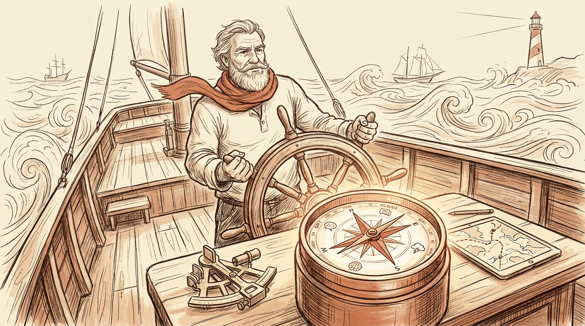
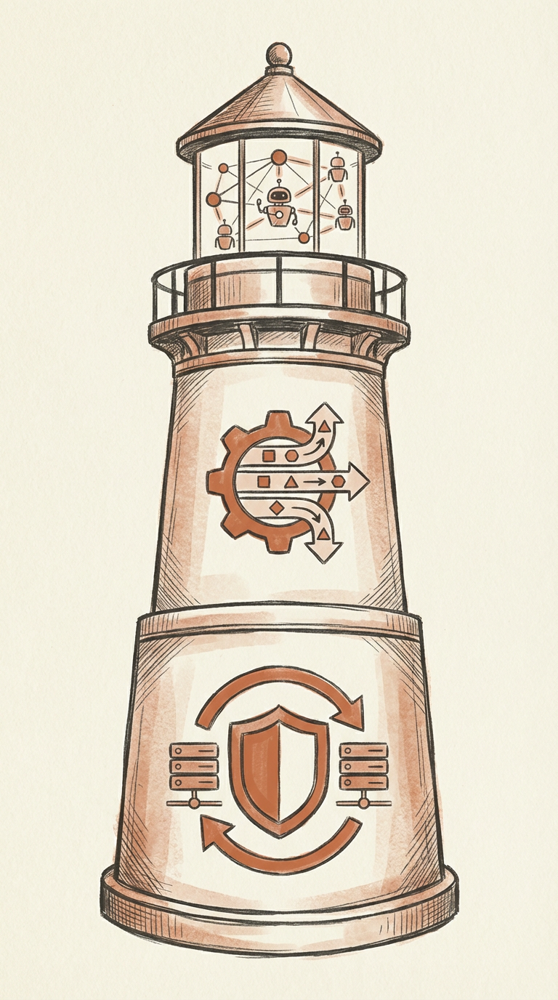
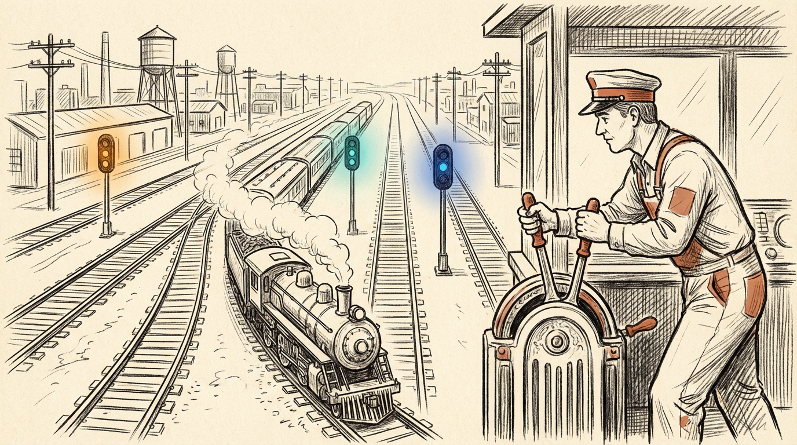
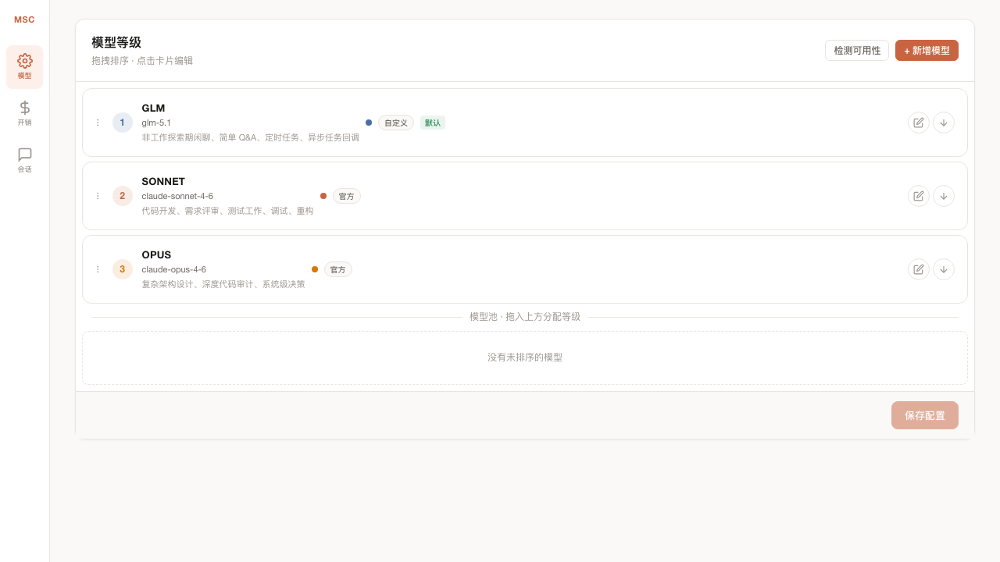
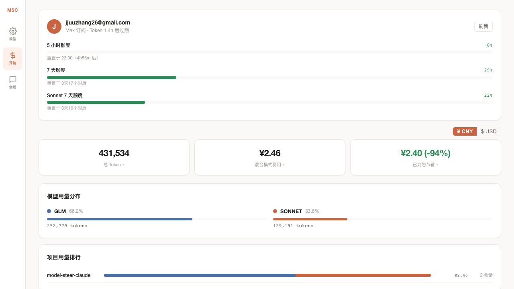

Claude Code 是当下最强编程 Agent，但它有一条硬限制：额度用完就停工。
人在用的时候还好 — 429 了等一会儿，重新来。但对于 AI 数字员工来说，这是致命的：429 了整个任务链断了，后面的任务全部卡住，没人手动重启。
NB-Claude 解决这个问题。它是一个本地代理，架在 Claude Code 和模型 API 之间，确保任何情况下都有模型可用：
| 场景 | 没有 NB-Claude | 有 NB-Claude |
|---|---|---|
| Sonnet 额度耗尽 | 任务中断，等待重置 | 自动切 GLM，无感继续 |
| API 返回 500 | Claude Code 退出 | 自动重试下一个 provider |
| GLM 临时限流 | 直接报错 | 自动降级到其他可用模型 |
| 主模型持续不可用 | 人工介入 | Circuit Breaker 自动熔断恢复 |
NB-Claude 提供三个逐层增强的能力，按需启用：

所有 API 请求经过本地代理。当主模型不可用时，自动按配置的链路降级：
## 请求流
用户 → Claude Code → 代理 ─┬─ Sonnet ── 429/500? ──┐
└─ GLM / DeepSeek ────────┴→ 永不中断不只是看 HTTP 状态码，还解析模型厂商的业务错误码，精准判断该不该 fallback：
配额耗尽时立即熔断，后续请求零延迟跳过。每 5 分钟探测恢复。
per-provider 业务错误码覆盖 HTTP 状态码，GLM 1234 也能正确触发 fallback。
纯 fail-fast 降级，避免与 Claude Code 内置重试叠加。
跨模型会话时自动修补 thinking-block 签名，无缝切换。

默认 cr 只做 fallback 保障。加 cr --route 后，代理将路由规则注入 system prompt，AI 在每次回复前根据任务类型自动选择最合适的模型。
在 Dashboard 上为每个模型等级写路由场景描述，AI 根据这些描述做决策：
| 等级 | 模型 | 路由场景 | 示例 |
|---|---|---|---|
| 1 | GLM-5.1 | 闲聊、简单 Q&A、文件查找 | "这个文件在哪？" |
| 2 | Sonnet | 代码开发、测试、调试、重构 | "帮我写个单元测试" |
| 3 | Opus | 架构设计、深度审计、系统决策 | "设计微服务架构" |
等级数量不限，模型不限 — 想加 DeepSeek、Moonshot、Qwen 随时加。每个等级的路由场景自由填写。拖拽排序调整优先级，保存后下次 session 立即生效。
也支持手动切换：/smoke（最便宜）、/redbull（最强）、/think-level N
运行 crd 打开本地 Dashboard http://localhost:3457/ui，所有配置通过界面完成，无需手编 JSON。


一键查看所有模型的额度状态和重置时间：
$ crq
Claude Subscription: pro
5h [█████████░░░░░░░░░░░] 45% 55% left resets in 2h30m
7d [██████████████░░░░░░] 72% 28% left resets in 6d12h
7d Sonnet [█████████████████░░░] 88% 12% left resets in 6d12h
✓ glm: glm-5.1 (ok)git clone https://github.com/Libeny/model-steer-claude.git
cd model-steer-claude
bash install.shvim ~/.msc/config.json # 填入 API Keysource ~/.zshrc
cr # 启动 Claude Code（自动 fallback）
cr --route # 启动 + AI 按规则路由| cr | 交互式会话（仅 fallback 保障） |
| cr --route | 交互式会话（fallback + AI 按规则路由） |
| cr -p "..." | 单次输出 |
| cr --resume <id> | 恢复会话 |
| crd | 打开 Dashboard |
| crq | 查看额度状态 |
让你的 AI 数字员工永不中断，自由切换模型，降低成本。